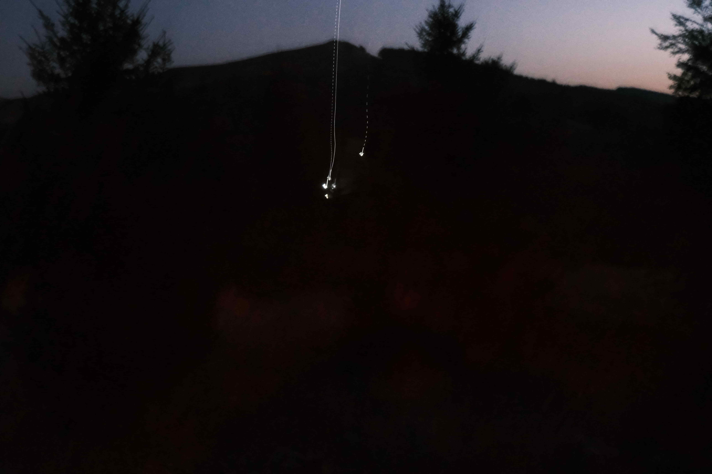
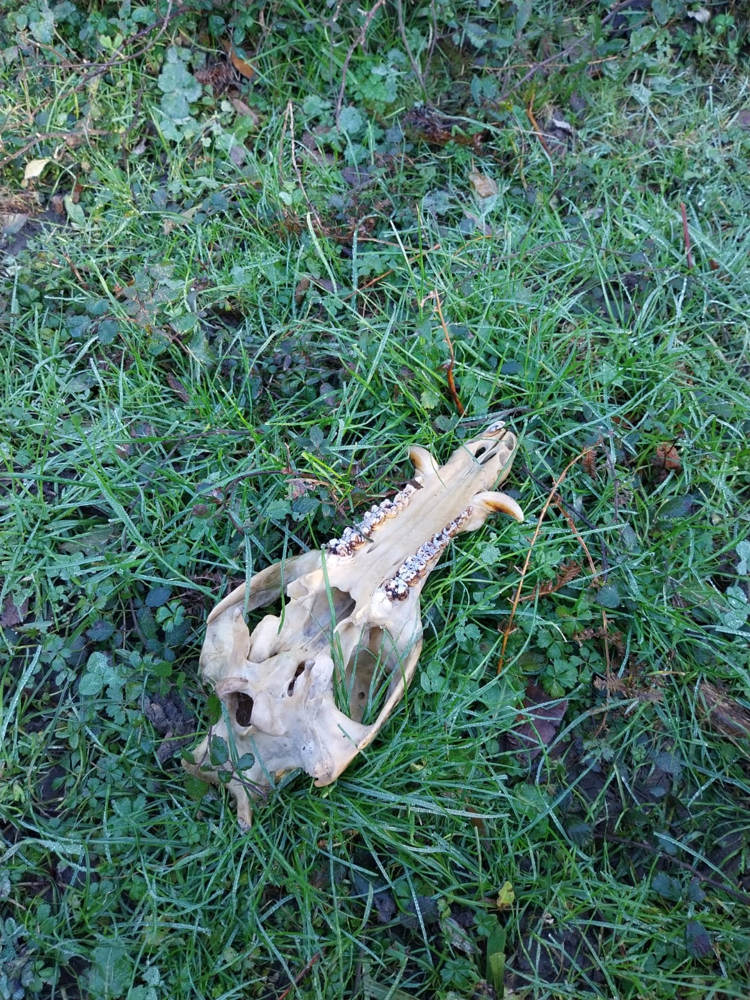

Musique électroacoustique
Biographie
Compositeur de musique électroacoustique, [votre nom] explore les rapports entre matière sonore, espace et perception à travers des pièces acousmatiques et des installations.
Né à [ville], [votre nom] a étudié la composition électroacoustique au [Conservatoire / université]. Ses œuvres ont été jouées dans des festivals tels que [festival 1], [festival 2] et [festival 3].
Son travail interroge [thématiques : l'espace, la mémoire, le paysage sonore…]. Il collabore régulièrement avec des artistes visuels et des performeurs.
Œuvres


Écouter
Une sélection de pièces disponibles en écoute libre. Pour l'intégralité du catalogue, rendez-vous sur SoundCloud.
Voir le profil complet →Agenda
15 mai 2025
Titre de la pièce / événement
Lieu — Ville, Pays
Concert
3 juin 2025
Autre événement ou échéance
Lieu — Ville
Festival
12 sept. 2025
Résidence de création
Centre de résidence — Ville
Résidence
8 mars 2025
Événement passé
Lieu — Ville
Création